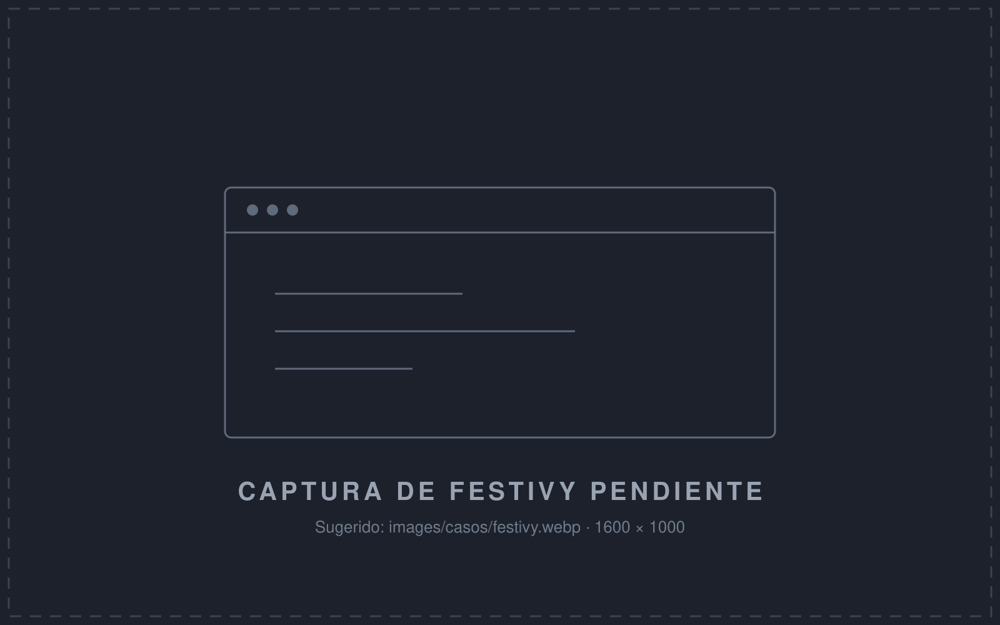

Producto propio
Festivy
Invitaciones digitales para casamientos, cumpleaños y cualquier festejo: se arman en minutos y los invitados confirman asistencia desde el celular. La diseñé, la construí y la lancé yo, de punta a punta.

Tecnología para comercios y pymes · Buenos Aires
Te ayudo a que tu negocio se vea y se encuentre en internet, y a automatizar las tareas que hoy hacés a mano una y otra vez. Ganás tiempo, bajás costos y te dedicás a lo que importa. Sin tecnicismos: me contás qué necesitás y te propongo una solución a tu medida.

Desde algo puntual hasta un sistema completo. Vos sabés de tu negocio; de la tecnología me encargo yo.
Una página web clara y rápida, conectada con tu WhatsApp y tus redes, para que quien te busca en internet te encuentre, confíe y te contacte.
Pedidos, turnos, recordatorios, planillas: lo que hoy hacés a mano todos los días lo puede hacer el sistema solo. Ganás horas y bajás costos.
Cuando el Excel o el cuaderno ya no alcanzan: ventas, stock, clientes o turnos en un solo lugar. O mejoro el sistema que ya usás, si anda lento o nadie lo sabe tocar.
Respuestas automáticas a las consultas de siempre y carga de datos desde facturas y documentos, para que no tengas que copiar todo a mano.
Algunos ejemplos de lo que se puede hacer. Si tu rubro no está, contame igual: casi siempre hay una forma de ahorrar tiempo.
Menú digital con QR, pedidos y reservas por WhatsApp o desde tu web, sin pagarle comisión a ninguna aplicación.
Ventas y stock en un mismo lugar, aviso cuando se está por acabar la mercadería y tu catálogo online para vender también por internet.
Turnos online que se agendan solos, con recordatorio automático por WhatsApp o mail para que nadie se olvide.
Producto propio
Invitaciones digitales para casamientos, cumpleaños y cualquier festejo: se arman en minutos y los invitados confirman asistencia desde el celular. La diseñé, la construí y la lancé yo, de punta a punta.

Hospital Británico · Salud
Grimoldi · Comercio
Simple y sin sorpresas. Uso herramientas de inteligencia artificial para trabajar más rápido, y eso se nota en los tiempos de entrega.
Me contás qué te pasa o qué querés lograr. La primera charla es gratis y sin compromiso.
Qué vamos a hacer, cuánto cuesta y cuándo está listo. Claro y por escrito.
Lo construyo y te voy mostrando avances, para que opines antes de que esté terminado.
Te enseño a usarlo y sigo a disposición para ajustes y soporte.
Soy Leo. Hace más de 15 años que desarrollo sistemas para bancos, hospitales y grandes empresas.
Hoy trabajo por mi cuenta, y quiero llevar esa experiencia a negocios como el tuyo: soluciones serias, explicadas en criollo y pensadas para el tamaño de tu negocio.
La primera charla es gratis y sin compromiso.